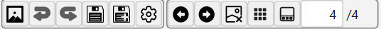
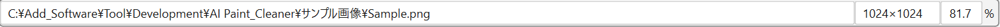
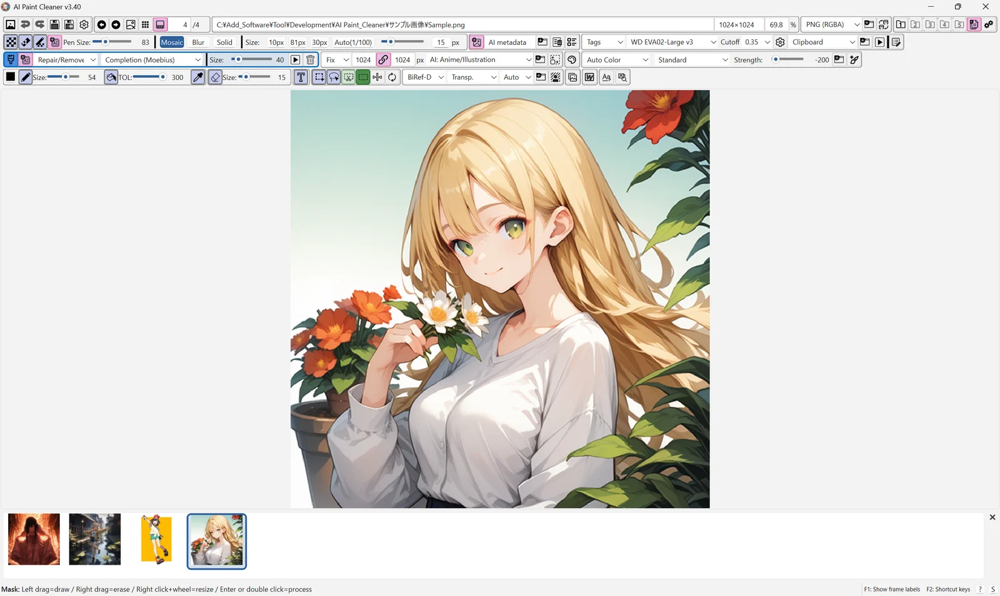
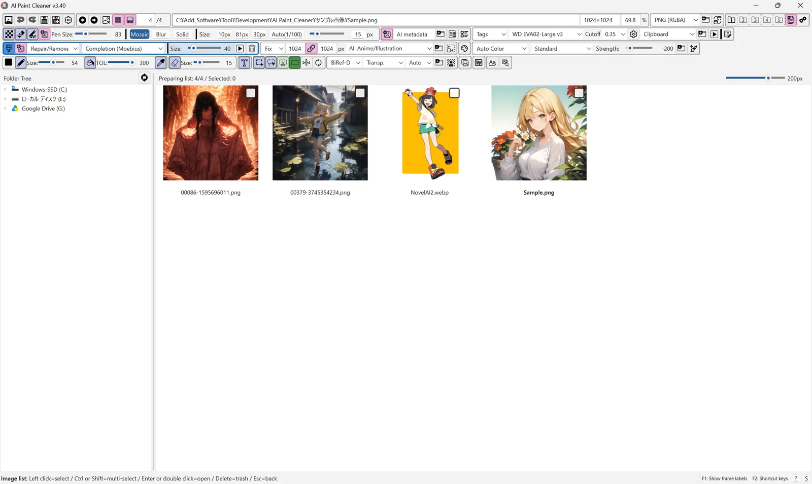

Screen & basics
Operations shared by every feature: opening and saving images, moving between images in a folder, and the main settings.
File tools and page operationsImage informationThumbnail bar and image gridMain settingsShortcut list
File tools and page operations

123456789101112
| 1Open | Opens an image (Ctrl+O). Drag & drop also works. |
| 2Undo | Undoes the last operation (Ctrl+Z). |
| 3Redo | Redoes an undone operation (Ctrl+Y). |
| 4Save | Ctrl+S. A confirmation before overwriting can be enabled in Settings. |
| 5Save As | Ctrl+Shift+S. The suffix added to the file name can be changed in Settings. |
| 6Settings | Opens display, save, processing and other settings. |
| 7Previous image | ← or the mouse back button. |
| 8Next image | → or the mouse forward button. |
| 9Delete image | Moves the current image to the trash (Delete). |
| 10Image grid | Shows the images in the folder as a grid (Ctrl+L). |
| 11Thumbnail bar | Shows thumbnails below the canvas. |
| 12Image number | Type a number and press Enter to jump to that image. |
Image information

123
| 1File name | Name of the open image. Full path display can be enabled in Settings. |
| 2Image size | Width × height (px). |
| 3Zoom | Canvas zoom (%). Type a value to change it. |
Thumbnail bar and image grid

Click a thumbnail to switch images. Close it with the × at the top right.

Left click to select, Ctrl / Shift for multiple, Enter / double-click to open, Delete to trash, Esc to go back. The slider at the top right changes the thumbnail size.
- Turn on "Show folder tree in grid view" in Settings to show a folder tree to the left of the grid (double-click to move).
- Right-click in the grid to select all, invert the selection, copy paths, or move the selection to the trash.
Main settings
Open with the gear button at the top left.
| Group | Main items |
|---|---|
| Display | Language, appearance (light / dark), full path display, original-size display, show / hide tools, highlight the active tool |
| Save | JPEG / WebP quality, PNG compression level, PDF creation, Save As suffix, overwrite confirmation, auto-save when switching images |
| Drawing | Mask opacity, mosaic size presets / edge blur / right-click diff replacement, transparency colors, pen tablet stability |
| Processing | Processing device, GPU model retention, LaMa processing area, AI auto mask (SAM2), diff replacement reference method |
| Models | Show / hide inpaint models, background removal models and AI correction presets; tag / caption model storage location |
| Shortcuts | Change keyboard shortcuts (mouse controls are fixed) |
| Other | Update check at startup, start maximized, skip confirmations, Eagle integration, logging |
Shortcut list
Keyboard shortcuts can be changed under Settings > Shortcuts. These are the defaults.
| Action | Key / mouse | When |
|---|---|---|
| Open / Save / Save As | Ctrl+O / Ctrl+S / Ctrl+Shift+S | |
| Undo / redo | Ctrl+Z / Ctrl+Y | |
| Previous / next image | ← / →, back / forward buttons | |
| Delete image | Delete | |
| Show / hide image grid | Ctrl+L | |
| Move / copy to sorting folder | 1–5 | When sorting folders are set |
| Open sorting folder | Ctrl+1–5 | When sorting folders are set |
| Switch tool | ↑ / ↓, right click＋back / forward | |
| Fit / 100% | Alt+0 / Ctrl+0 | |
| Copy / paste / cut | Ctrl+C / Ctrl+V / Ctrl+X | With a selection |
| Delete vertical / horizontal strip | Ctrl+Alt+V / Ctrl+Alt+H | With a selection |
| Expand vertical / horizontal strip | Ctrl+Shift+V / Ctrl+Shift+H | With a selection |
| Switch inpaint category | Ctrl+↑ / ↓, left click＋back / forward | Mask tool selected |
| Switch model within category | Ctrl+Shift+↑ / ↓ | Mask tool selected |
| Grow / shrink mask area | Shift＋wheel | Cursor over a mask |
| Add / remove mask with AI select | Shift＋left click / Shift＋right click | AI auto mask on |
| Mosaic size down / up | , / . | Mosaic tools |
| Mosaic size preset | Shift+, / Shift+. | Mosaic tools |
| Mosaic type | M / Shift+M | Mosaic tools |
| Show diff replacement reference | Alt+R (while held) | Diff replacement / mosaic tools |
| Diff replacement reference settings | Ctrl+R | Diff replacement / mosaic tools |
| Show AutoMosaic preview image | Alt+P (while held) | While a preview is shown |
| Frame labels / shortcut list | F1 / F2 |